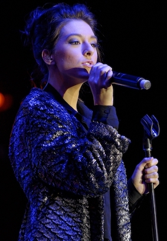

Early Life
Christina Grimmie was born on March 12, 1994, to Tina and Albert Grimmie. Her father worked at ‘Verizon Communications,’ while her mother worked as a receptionist until she was diagnosed with breast cancer. She also had an older brother named Marcus who served as her road manager
Read MoreMusical Journey
Christina started her debut as a You Tube performer when her friend, Lauren, talked her into uploading a video of her doing a cover. On July 17th 2009, Christina uploaded a video of her singing "Don't Wanna Be Torn" from the hit show "Hanna Montana".
The Voice
During the 2014 "The Voice" competition, Grimmie auditioned for a spot by singing Miley Cyrus' "Wrecking Ball" where all four coaches, immediately, approved and turned around to receive her. She was hotly contested after by the coaches and Grimmie eventually decided to go with Adam Levine as her coach. She placed 3rd in the competition behind Josh Kaufman (winner) and Jake Worthington (runner-up).
Read MoreThe Passing
On June 10, 2016, Grimmie was shot by 27-year-old Kevin James Loibl while she signed autographs following her performance with Before You Exit at The Plaza Live in Orlando. Loibl was tackled by Grimmie's brother, but the gunman broke free, backed against a wall, and shot himself dead. Grimmie was taken to Orlando Regional Medical Center in critical condition with four gunshot wounds; she was pronounced dead just before 11 p.m. local time.
Read MoreMusic and Performances
" Be Stupid, Be Dumb, Be Funny, if that's who you are. Don't try to be someone that society wants you to be. So be yourself -Christina "
-
Early Life
Christina Victoria Grimmie was born to Tina and Albert Grimmie in the Marlton section of Evesham Township, New Jersey, on March 12, 1994.[4] Her mother worked as a receptionist until she was diagnosed with breast cancer; her father worked at Verizon Communications as of 2014
Christina started her debut as a You Tube performer when her friend, Lauren, talked her into uploading a video of her doing a cover. On July 17th 2009, Christina uploaded a video of her singing "Don't Wanna Be Torn" from the hit show "Hanna Montana".Path to Fame
Within a month after her first cover of "Don't Wanna Be Torn", Christina took her first step to stardom with her new cover of Miley Cyrus' "Party in the USA". With present view count of over 12 million, this video allowed her to gain some publicity as well as recognition of her talents by the YouTube community.Popular YT Performances
Party in the USA was just the beginning as Christina kept honing her talents and becoming a minor celebrity in the YouTube community. Most of her releases reached view count of more than a million per video. Christina was just getting started!YouTube Competition
On December 6th 2010, Christina released a video announcing her invitation to the YouTube competition. She was competing with big name stars like Selena Gomez, Justin Bieber, and Rihanna. Despite her fierce competitors, she still placed in the top five and ranked second behind Selena Gomez; setting herself above Justin Bieber, Rihanna, and Nicki Minaj.Road to Stardom
As Christina's fan base and subscription to her channel kept growing, she gained more recognition for her vocal talents. She was noticed by Selena Gomez's stepfather, Brian Teefey, who became interested in Christina's talents after watching several performance. Around the time after Christina's performance of 'Miley Cyrus Medley' produced by Kurt Hugo Schneider, Brian Teefey contacted Grimmie and became her manager.Start of Something Magical
With Brian Teefey as her manager, Christina was well on her way in releasing her own album; "Find Me" EP was released for digital download on June 14, 2011. Although the physical album was not widely commercially released, physical albums were sold during her live performances while she toured and opened for Selena Gomez on her "We Own the Night Tour". The album was released independent of any label and debuted at #35 on Billboard 200 chart; entering top 10 (6) for "Independent Albums" in the US. Wanting to ensure that anyone could afford to buy her music, "Find Me" was sold at a low price of $5.99.Making an Appearance
Christina made various appearances on popular shows and events such as "The Ellen DeGeneres Show" (Oct. 10, 2011), "39th American Music Award" (Nov. 20, 2011), Disney Channel's "So Random!" (Dec. 11, 2011), and "Dancing with the Stars" (Oct. 16, 2012). Signed! with Creative Artist Agency 'With Love' January 2012, Christina moved to Los Angeles and signed with Creative Artist Agency as well as starring on Disney.com web show "Power Up: with Christina Grimmie" (Mar. 29, 2012 - Jun. 5, 2012) where she was able to talk about one of her favorite subject: video gaming. Christina joined up with Selena Gomez and opened for her "Star Dance Tour" where she was able to perform songs from her upcoming second album "With Love" (Aug. 6, 2013).The Voice 2014
During the 2014 "The Voice" competition, Grimmie auditioned for a spot by singing Miley Cyrus' "Wrecking Ball" where all four coaches, immediately, approved and turned around to receive her. She was hotly contested after by the coaches and Grimmie eventually decided to go with Adam Levine as her coach. She placed 3rd in the competition behind Josh Kaufman (winner) and Jake Worthington (runner-up). Adam Levine, who coached Christina during her competition in "The Voice", expressed his intentions to sign Grimmie on with "222 Records" and sign a record deal. Fans of Grimmie wondered why she didn't outright sign on post-"The Voice". According to "Sawdah" from "The Real Grimmie Blog", having to sign various contracts with NBC to be on the show, there may have been conflicts that did not allow Grimmie to sign with a competing record label: Universal Music Group vs Interscope Records (222 Records). In the end, Grimmie signed on with Island Records where she released her new single "Must Be Love".
Christian Faith
Grimmie was raised a devout Christian and never shyed away from professing her belief in Jesus Christ as she would often remind her fans of her convictions. "I'm a full-on Christian, by the way. Jesus is my Savior and I looove Him and sing for Him."Passing
On June 10, 2016, Grimmie was shot by 27-year-old Kevin James Loibl while she signed autographs following her performance with Before You Exit at The Plaza Live in Orlando. Loibl was tackled by Grimmie's brother, but the gunman broke free, backed against a wall, and shot himself dead. Grimmie was taken to Orlando Regional Medical Center in critical condition with four gunshot wounds; she was pronounced dead just before 11 p.m. local time.
If you wanted to contribute on Christina Grimmie's Tribute page, send us your details.
Sources and links
wikipedia.org, youtube.com, tribute commentary source Jesse Barkoll